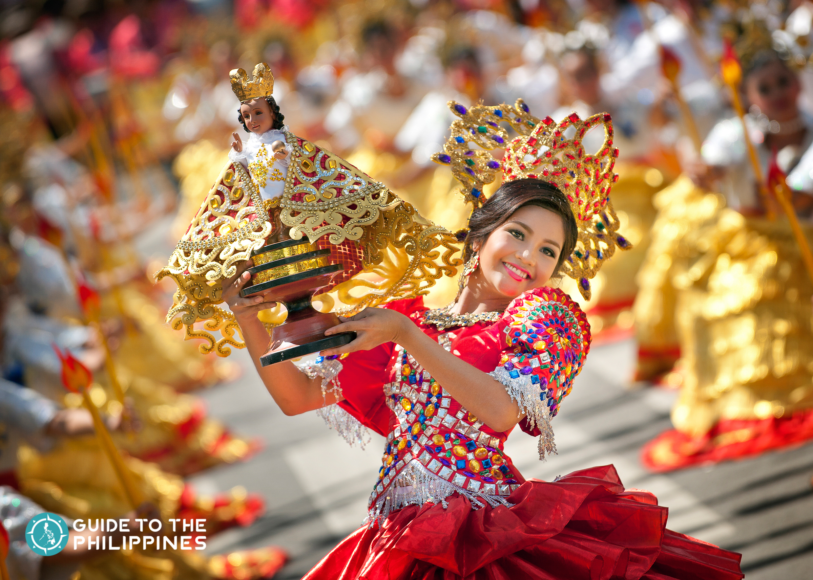
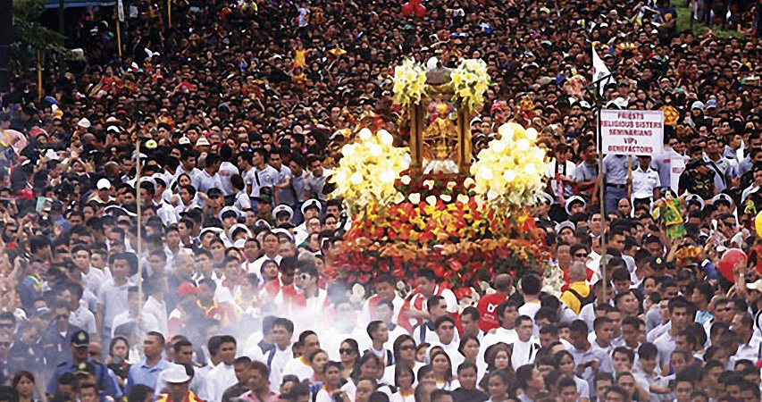
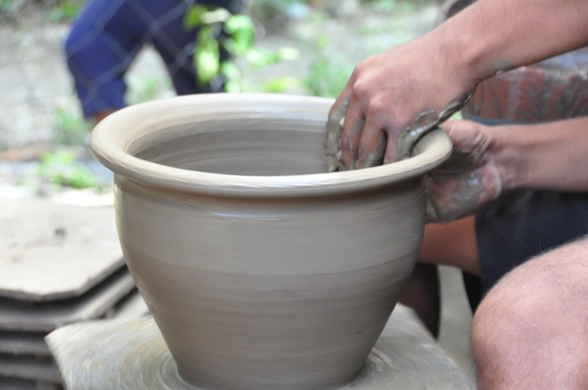
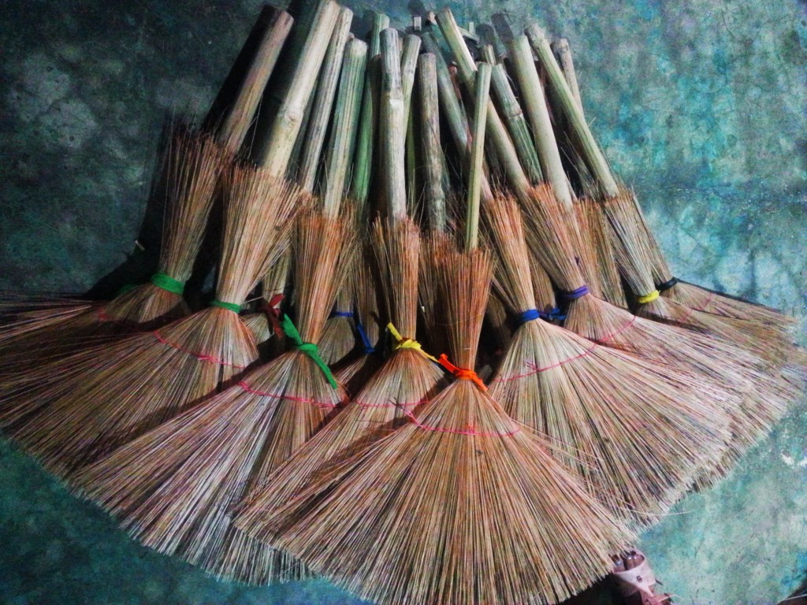

CULTURE OF CEBU
TRADITION- CEBU 
The Sinulog is a dance-prayer expressing devotion to the Holy Child. it is a popular belief among Cebuanos that this dance-prayer is the most effective way of getting favors from the Sto. Niño. This festival is world-renowned and the most extravagant festival in Cebu.
BELIEFS- CEBU 
The majority of Cebuanos are Roman Catholic, with many in rural areas synchronizing Catholicism with indigenous Bisayan folk religion. A minority of Cebuanos (specifically those in Mindanao) are Muslim, or in mixed Chinese-Cebuano families, incorporate Catholic beliefs with aspects of Buddhism or Taoism.
ARTS(Cebuano Guitar-making) - CEBU 
The Cebuano guitar-making industry is known for producing high-quality guitars using local materials such as narra and spruce. The guitars are often handcrafted and are sought after by musicians worldwide.
ARTS(Cebuano pottery) - CEBU 
Cebuano pottery is a traditional craft that produces functional and decorative pottery using local materials such as clay and natural pigments. The pottery often features intricate designs and patterns.
ARTS( Silhig-making) - CEBU 
Silhig is a traditional broom made from soft broomcorn and bamboo sticks. It is commonly used in Filipino households for cleaning floors and outdoor spaces.